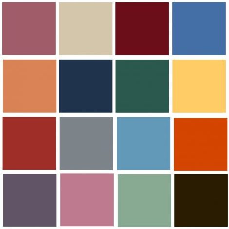
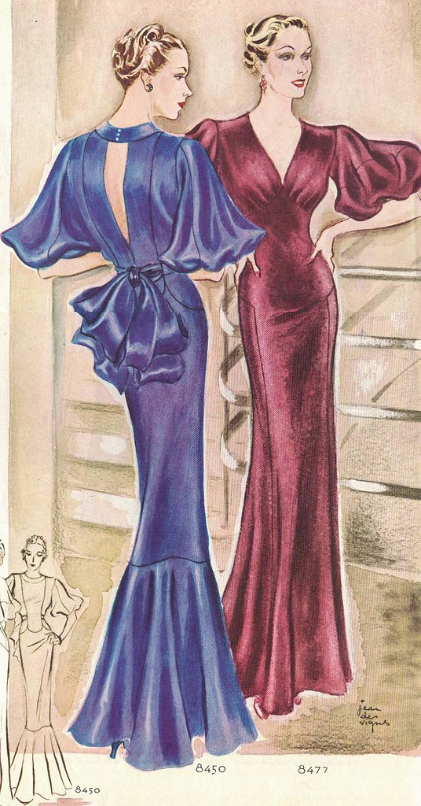

THE FORGOTTEN DECADE
The 1930s is a forgotten decade, especially in fashion. Decades of fashion trends have made comebacks. Mom jeans (90s), high wasted jeans (80s), corduroy (70s), leopard print (60s), silk scarves (50s), cartwheel hats (40s) and round glasses (20s). But, nothing is specificaly credited to the 1930s. The 1930s changed the way we wear clothes and how we make them.
Also, the colors of this decade are timless.
1930s COLOR PALETTE
THE GREAT DEPRESSION
In the 1920s, it was normal for women to change outfits multiple times a day to fit their activities. This wasn't possible in the 1930s, as the Great Depression halted extraneous spending. So, thanks to the Great Depression and the 1930s, it is socially acceptable to wear the same thing, all day. Between 1929 and 1932, the average income of an American family decreased significantly. You'd assume the styles of that time would reflect that. The exact opposite happened! Tough times led to people living vicariously through the fashion they saw in theater. In attempt to recreate those looks, new sewing patterns and DIY clothing production methods flourished!DAYWEAR FASHION
As ladies became active in day-to-day household duties, inside and outside, daywear became more focused on comfort and ease of movement. This switch of clothings purpose and style is why we have zippers, backless dresses, SWAETERS (yes, sweaters!), and the bias cut (fabric cut at a 45 degrees against the weave).
